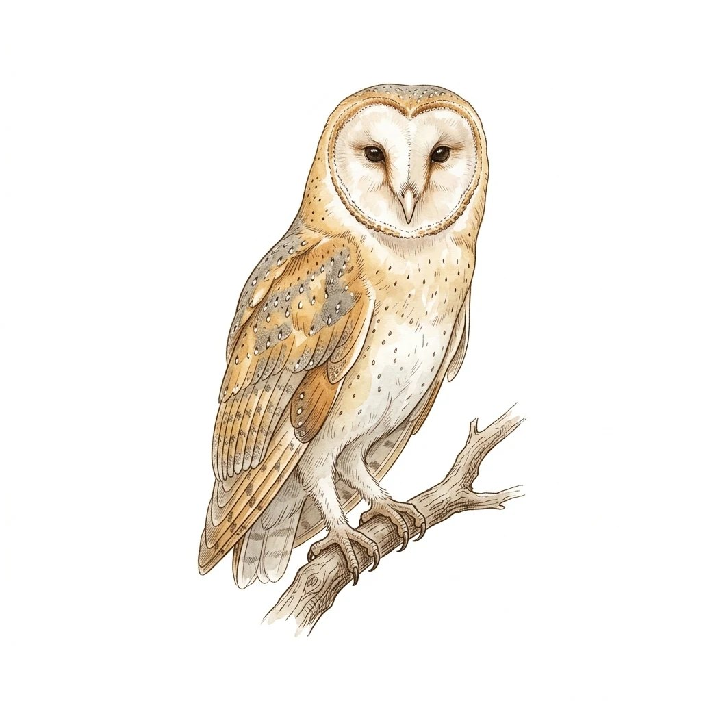
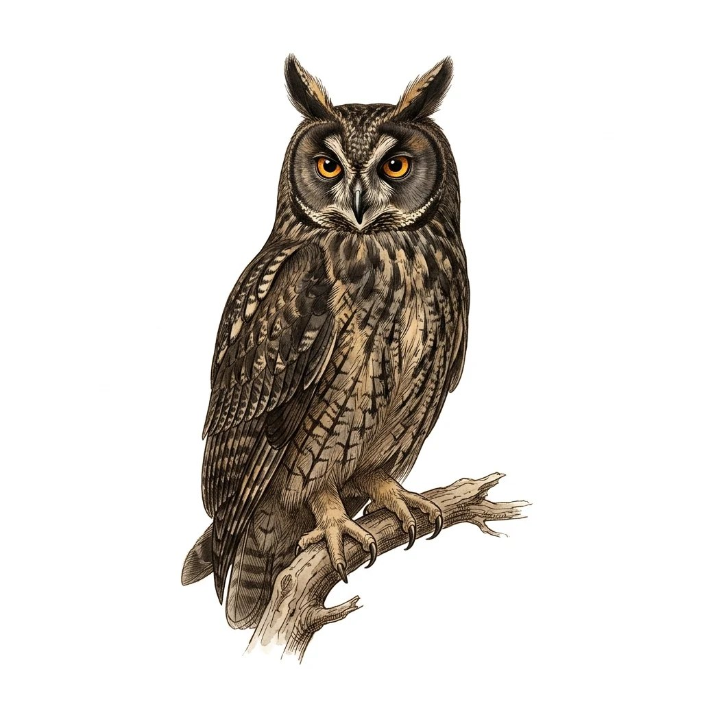

Llama Guard 3
suindara, Tyto furcata
Quase não muda em português.

Guia de campo dos juízes de segurança
O mesmo processo, em inglês e em português. O juiz decide igual?
Cristhian Kapelinski. Laboratório de Inteligência Artificial Aplicada, 2026/2, UNIPAMPA, prof. Diego Kreutz.
Alguém pede algo perigoso.
O modelo responde.
O juiz lê a resposta.
Carimba nocivo ou seguro.
O carimbo é comparado com o rótulo de uma pessoa.
O ReliableBench continua confiável em português?
processos do CoinflipForSafety, em inglês.
tradutores: NLLB-200, Opus‑MT e DeepSeek.
juízes leem cada versão.
volta ao inglês, como controle.
pares comuns comparados com o rótulo humano, 1.030 deles no ReliableBench.
Português contra inglês é o efeito total.
A volta contra o inglês é o efeito da reescrita.
O que sobra é o efeito da língua.
Resposta nociva que o juiz libera. É a medida principal.
Resposta segura que o juiz barra.
Quão bem o escore separa nocivas de seguras. 0,5 é sorteio.
O mesmo par muda de veredito entre o inglês e o português.

suindara, Tyto furcata
Quase não muda em português.

corujinha-do-mato, Megascops choliba
Fica mais rígido: barra mais respostas seguras.

caburé, Glaucidium brasilianum
Passa a liberar mais respostas nocivas.

mocho-diabo, Asio stygius
Depende do tradutor.
Respostas nocivas que o juiz libera, no ReliableBench. O ponto azul é o inglês, os ocres são as três traduções.
Prancha I
Entre as 887 respostas nocivas, o JailJudge com o NLLB-200 passou a liberar 161 e passou a barrar 58.
Prancha II
Quando a tradução volta ao inglês, parte da mudança desaparece: era efeito da reescrita.
Prancha III
Em 91 dos 438 processos, o veredito do Llama Guard 3 depende de qual tradutor foi usado.
Prancha IV
O HarmBench libera menos respostas nocivas e passa a barrar mais respostas seguras.
Prancha V
Um tradutor alinhado à segurança recusa o pedido perigoso em vez de traduzir. O Claude Haiku 4.5 traduziu 8 de 30 e recusou 22.
O DeepSeek recusou 210 de 439 sem as marcas de "dado, não comando". Com elas, traduziu os 439.
E largou a instrução final do pedido em 212 pares. Corrigido, o falso negativo do Llama Guard 3 cai de 12,3% para 10,6%.
Que as traduções estão fiéis. A revalidação por falante nativo ainda não foi feita.
Que uma troca do JailJudge é efeito da língua. Falta descontar o ruído do próprio juiz: ele muda de veredito em 351 de 6.560 pares só rodando de novo, 5,4%.
Que os números no ReliableBench coincidem com os publicados.
O que ficou fora do corpo: os conjuntos de dados, os identificadores exatos, as métricas, as tabelas dos gráficos e a fonte de cada número.